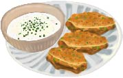

Zucchini-Möhren-Puffer
Zucchini ist reich an Kalzium, Magnesium und Eisen.
Außerdem beinhaltet es Vitamin A, B und C.
Zucchini haben sehr wenig Kalorien aber sind dennoch reich
an Vitamin und sind Mineralstoffreich. Genauso sind auch
Möhren gut für die Gesundheit und stärken unser Immunsystem. Die Zucchini-Möhren-Puffer
werden mit einem kremigen Dip serviert.

Kosten
4€